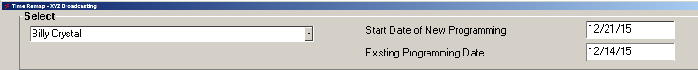
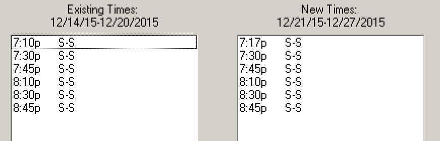
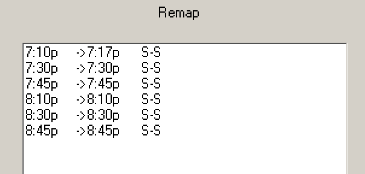
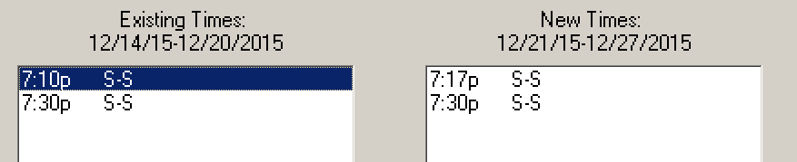
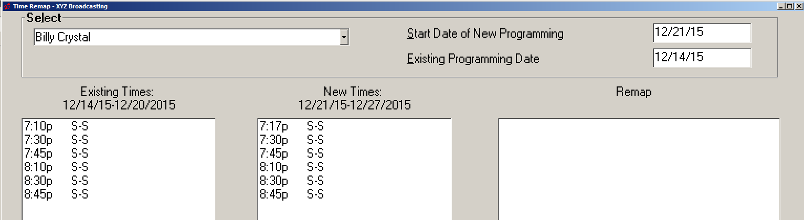
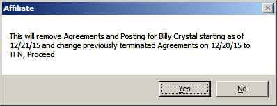

Time Remap
Every time programming (inventory) is changed in the Traffic system, the Affiliate Agreements must be updated to reflect the changes. If the number of avails are changed or the days are shifted, agreements must be updated using the Agreements screen or Fast Add. However, if only the avail times are changed, the Time Remap feature can be used to create new agreements based on the previously entered agreements, but with the new avail times mapped to the old avail times. For example, if there was a break at 7:10pm on Saturday and Sunday that was changed to be at 7:17pm, this would be a case where Time Remap could be used to update the agreements because only the avail time changed, and not the total number of avails or the days on which the program airs.
Time Remap Overview
After the changed programming has been saved and scheduled, go to the Affiliate Agreements screen and press the Time Remap button at the bottom of the screen.
From the “Select” vehicle dropdown at the top of the Time Remap screen, select the vehicle that had the avail times changed.
Enter the Monday start date of the new programming in the “Start Date of New Programming” field. For example, if the new programming starts in the week of 12/21/15, enter 12/21/15 as the start date. The system will use this date to find the new avail times.
After entering the “Start Date of New Programming”, the system will automatically enter the “Existing Programming Date” (using the Monday of the week prior to the start date of the new programming). This will be used to populate the current avail times in the “Existing Times” field. The “Existing Programming Date” can be manually altered if for some reason the automatically calculated date should not be used.

After the Start Date of New Programming and Existing Programming Dates have been entered, the Existing Times and New Times fields will be populated with the current avail times and the new avail times based on the new programming that was entered.

From this point, there are two ways to remap the times: “Auto Match”, which automatically matches up the existing and new times; and the manual method, where the user must manually match up the existing times and the new times.
Using Auto Match to Remap Times
When using Auto Match, the system will attempt to automatically match up the existing and new times. To use Auto Match, simply press the Auto Match button.
When Auto Match matches up the avails, the matched avails will appear in the Remap box, where it will show the existing time on the left pointing to the new time to the right, along with the valid days.
For example, “7:10p -> 7:17p S-S” shows that the 7:10p existing time was matched with the 7:17p new time, for Saturday and Sunday, as shown in the screenshot below. (In this example, the avail times did not change on the other breaks, so those will be automatically matched as well.)

When using Auto Match, if you find that an avail was matched incorrectly, in the Remap field, click the incorrect line. This will make the existing and new times go back to the Existing and New Times field, where they can be manually matched with the correct avail times.
For example, if for some reason the existing 7:10pm avail was supposed to be matched to the 7:30pm new avail, undo the 7:10p->7:17p match and the 7:30p->7:30p match by clicking on them in the Remap field, then click the 7:10p avail in the Existing Times box, highlighting the avail in blue, and then click the 7:30p avail in the New Times box. This will map the 7:10p existing avail to the 7:30p new avail. The 7:30p and 7:17p avails could then be matched with each other.

Once all the existing and new times have been correctly matched, press “Update Agreements” to create new agreements using the new avail times. The update process will terminate the old agreements and create new ones starting from the new start date. The new agreements can be reviewed using the Affiliate Agreements report.
Manually Remapping Times
To manually control how the existing times are matched to the new times instead of using Auto Match, for each existing time, click the existing time in the “Existing Times” box, then click the new time in the “New Times” box that it should be mapped to. This will link the two times together and place the linked times in the Remap box.
Times that were incorrectly linked together can be undone by clicking the linked times in the Remap box.
Once you have finished mapping all the Existing Times with the New Times, click Update Agreements to terminate the old agreements and create the new agreements starting from the entered start date using the new avail times.
Undo Previous Remap
If you need to undo a Time Remap that was done (for example because of a mistake in the programming at the time of doing the original remap), on the Time Remap screen, enter the Vehicle Name and Start Date of the New Programming, and allow the system to enter the Existing Programming Date.

After entering the Vehicle and Start Date of the new Programming, press the Undo Previous Remap button. This will cause a warning message to appear.
Undo Remap warning message example:

When pressing Yes on the warning message, the previously created agreements will be removed, and the previously terminated agreements will be restarted as of the entered start date of the new programming.
After the Time Remap has been undone, it can be re-done if necessary using the Time Remap feature as previously described in this section.